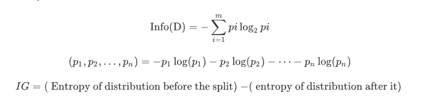

Decision Tree¶
Definisi Decision Tree¶
Pohon keputusan (Decision Tree) adalah alat pendukung keputusan yang menggunakan model keputusan seperti pohon dan kemungkinan konsekuensinya, termasuk hasil kebetulan, sumber daya, dan utilitas. Ini adalah salah satu cara untuk menampilkan algoritma yang hanya berisi pernyataan kontrol bersyarat.
Dalam mengklasifikasikan data, model prediksi menggunakan struktur pohon/ berhirarki ini memiliki kemampuan untuk mem-break-down proses pengambilan keputusan yang kompleks menjadi simpel. Pengambilan keputusan akan lebih menginterpretasikan solusi dari permasalahan.
Semakin banyak cabang pada pohon keputusan maka akan semakin banyak rule (aturan). Pembahasan pada halaman ini akan melihat bagaimana Decision Tree dapat diimplementasikan dengan library "Scikit-Learn Python".
Dasar Teori¶
Decision Tree adalah salah satu algoritma paling kuat dan populer. Algoritma decision-tree termasuk dalam kategori algoritma pembelajaran terawasi. Ia bekerja untuk variabel output kontinuitas maupun kategoris.

Asumsi yang saat menggunakan pohon keputusan:
- Pada awalnya, seluruh rangkaian pelatihan dianggap sebagai akar.
- Nilai fitur lebih disukai sebagai kategori. Jika nilai kontinu maka mereka didiskritisasi sebelum membangun model.
- Catatan didistribusikan secara rekursif berdasarkan nilai atribut.
- Urutan untuk menempatkan atribut sebagai root atau simpul internal pohon dilakukan dengan menggunakan beberapa pendekatan statistik.

Algoritma Pohon Keputusan:
- Tempatkan atribut terbaik dari dataset kami di akar pohon.
- Membagi set pelatihan menjadi himpunan bagian. Subset harus dibuat sedemikian rupa sehingga setiap subset berisi data dengan nilai yang sama untuk suatu atribut.
- Ulangi langkah 1 dan langkah 2 pada setiap subset sampai Anda menemukan simpul daun di semua cabang pohon.
Saat membangun classifier pohon keputusan, dapat meningkatkan akurasinya dengan menyetelnya dengan parameter yang berbeda. Tetapi penyempurnaan ini harus dilakukan dengan hati-hati karena dengan melakukan ini, algoritma dapat menyesuaikan dengan data training & pada akhirnya itu akan membangun model generalisasi yang buruk.
Dalam memprediksi data dengan metode Decision Tree menggunakan salah satu dari 2 kriteria yaitu “gini index” atau “information gain”. Kriteria ini digunakan untuk memilih banyaknya attributes dari dataset yang atributnya akan ditempatkan pada root node atau internal node.
Gini Index
Rumus Gini Index:
Indeks Gini adalah metrik untuk mengukur seberapa sering elemen yang dipilih secara acak akan diidentifikasi secara salah. Itu berarti atribut dengan indeks gini yang lebih rendah harus lebih disukai.
Information Gain
Rumum Information Gian:

Information Gain adalah ukuran ketidakpastian variabel acak, itu mencirikan ketidakmurnian dari kumpulan contoh yang sewenang-wenang. Semakin tinggi entropi, semakin banyak konten informasinya.
Implementasi Program¶
Pada bagian ini, membahas bagaimana Decision Tree dapat diimplementasikan dengan library "Scikit-Learn Python. Dataset dapat dilihat di sini.
Berikut kodenya:
# Jalankan Program ini di python lokal.
# Install libraries.
# Import libraries yang dibutuhkan dalam program
import numpy as np
import pandas as pd
from sklearn.metrics import confusion_matrix
from sklearn.model_selection import train_test_split
from sklearn.tree import DecisionTreeClassifier
from sklearn.metrics import accuracy_score
from sklearn.metrics import classification_report
# Fungsi import dataset yang digunakan
def importdata():
balance_data = pd.read_csv(
'https://archive.ics.uci.edu/ml/machine-learning-'+
'databases/balance-scale/balance-scale.data',
sep= ',', header = None)
# Tampilkan info Dataset
print ("Informasi Data\n")
print ("Jumlah data: ", len(balance_data))
print ("Dimensi data: ", balance_data.shape)
# Tampilkan Dataset pengamatan
print ("Dataset: \n",balance_data.head())
return balance_data
# Fungsi untuk split dataset
def splitdataset(balance_data):
# Pembagian variabel target
X = balance_data.values[:, 1:5]
Y = balance_data.values[:, 0]
# Split dataset menjadi data training dan data testing
X_train, X_test, y_train, y_test = train_test_split(
X, Y, test_size = 0.3, random_state = 100)
return X, Y, X_train, X_test, y_train, y_test
# Fungsi untuk menunjukkan data training dengan GiniIndex
def train_using_gini(X_train, X_test, y_train):
# Membuat objek klasifikasi
clf_gini = DecisionTreeClassifier(criterion = "gini",
random_state = 100,max_depth=3, min_samples_leaf=5)
# menunjukkan data training
clf_gini.fit(X_train, y_train)
return clf_gini
# Fungsi untuk menunjukkan data training dengan Entropy.
def tarin_using_entropy(X_train, X_test, y_train):
# Pohon keputusan dengan entropy
clf_entropy = DecisionTreeClassifier(
criterion = "entropy", random_state = 100,
max_depth = 3, min_samples_leaf = 5)
# menunjukkan data training
clf_entropy.fit(X_train, y_train)
return clf_entropy
# Fungsi untuk membuat prediksi
def prediction(X_test, clf_object):
y_pred = clf_object.predict(X_test)
print("Hasil prediksi:")
print(y_pred)
return y_pred
# Fungsi menghitung akurasi
def cal_accuracy(y_test, y_pred):
print ("Matriks: \n", confusion_matrix(y_test, y_pred))
print ("Akurasi: ", accuracy_score(y_test,y_pred)*100)
print ("Laporan: ", classification_report(y_test, y_pred))
# Kode Utama
def main():
data = importdata()
X, Y, X_train, X_test, y_train, y_test = splitdataset(data)
clf_gini = train_using_gini(X_train, X_test, y_train)
clf_entropy = tarin_using_entropy(X_train, X_test, y_train)
print("\nHasil hitung dengan Gini Index")
y_pred_gini = prediction(X_test, clf_gini)
cal_accuracy(y_test, y_pred_gini)
print("\nHasil hitung dengan Entropy")
y_pred_entropy = prediction(X_test, clf_entropy)
cal_accuracy(y_test, y_pred_entropy)
main() Hasilnya:
Informasi Data
Jumlah data: 625
Dimensi data: (625, 5)
Dataset:
0 1 2 3 4
0 B 1 1 1 1
1 R 1 1 1 2
2 R 1 1 1 3
3 R 1 1 1 4
4 R 1 1 1 5
Hasil hitung dengan Gini Index
Hasil prediksi:
['R' 'L' 'R' 'R' 'R' 'L' 'R' 'L' 'L' 'L' 'R' 'L' 'L' 'L' 'R' 'L' 'R' 'L'
'L' 'R' 'L' 'R' 'L' 'L' 'R' 'L' 'L' 'L' 'R' 'L' 'L' 'L' 'R' 'L' 'L' 'L'
'L' 'R' 'L' 'L' 'R' 'L' 'R' 'L' 'R' 'R' 'L' 'L' 'R' 'L' 'R' 'R' 'L' 'R'
'R' 'L' 'R' 'R' 'L' 'L' 'R' 'R' 'L' 'L' 'L' 'L' 'L' 'R' 'R' 'L' 'L' 'R'
'R' 'L' 'R' 'L' 'R' 'R' 'R' 'L' 'R' 'L' 'L' 'L' 'L' 'R' 'R' 'L' 'R' 'L'
'R' 'R' 'L' 'L' 'L' 'R' 'R' 'L' 'L' 'L' 'R' 'L' 'R' 'R' 'R' 'R' 'R' 'R'
'R' 'L' 'R' 'L' 'R' 'R' 'L' 'R' 'R' 'R' 'R' 'R' 'L' 'R' 'L' 'L' 'L' 'L'
'L' 'L' 'L' 'R' 'R' 'R' 'R' 'L' 'R' 'R' 'R' 'L' 'L' 'R' 'L' 'R' 'L' 'R'
'L' 'L' 'R' 'L' 'L' 'R' 'L' 'R' 'L' 'R' 'R' 'R' 'L' 'R' 'R' 'R' 'R' 'R'
'L' 'L' 'R' 'R' 'R' 'R' 'L' 'R' 'R' 'R' 'L' 'R' 'L' 'L' 'L' 'L' 'R' 'R'
'L' 'R' 'R' 'L' 'L' 'R' 'R' 'R']
Matriks:
[[ 0 6 7]
[ 0 67 18]
[ 0 19 71]]
Akurasi: 73.40425531914893
Laporan: precision recall f1-score support
B 0.00 0.00 0.00 13
L 0.73 0.79 0.76 85
R 0.74 0.79 0.76 90
micro avg 0.73 0.73 0.73 188
macro avg 0.49 0.53 0.51 188
weighted avg 0.68 0.73 0.71 188
Hasil hitung dengan Entropy
Hasil prediksi:
['R' 'L' 'R' 'L' 'R' 'L' 'R' 'L' 'R' 'R' 'R' 'R' 'L' 'L' 'R' 'L' 'R' 'L'
'L' 'R' 'L' 'R' 'L' 'L' 'R' 'L' 'R' 'L' 'R' 'L' 'R' 'L' 'R' 'L' 'L' 'L'
'L' 'L' 'R' 'L' 'R' 'L' 'R' 'L' 'R' 'R' 'L' 'L' 'R' 'L' 'L' 'R' 'L' 'L'
'R' 'L' 'R' 'R' 'L' 'R' 'R' 'R' 'L' 'L' 'R' 'L' 'L' 'R' 'L' 'L' 'L' 'R'
'R' 'L' 'R' 'L' 'R' 'R' 'R' 'L' 'R' 'L' 'L' 'L' 'L' 'R' 'R' 'L' 'R' 'L'
'R' 'R' 'L' 'L' 'L' 'R' 'R' 'L' 'L' 'L' 'R' 'L' 'L' 'R' 'R' 'R' 'R' 'R'
'R' 'L' 'R' 'L' 'R' 'R' 'L' 'R' 'R' 'L' 'R' 'R' 'L' 'R' 'R' 'R' 'L' 'L'
'L' 'L' 'L' 'R' 'R' 'R' 'R' 'L' 'R' 'R' 'R' 'L' 'L' 'R' 'L' 'R' 'L' 'R'
'L' 'R' 'R' 'L' 'L' 'R' 'L' 'R' 'R' 'R' 'R' 'R' 'L' 'R' 'R' 'R' 'R' 'R'
'R' 'L' 'R' 'L' 'R' 'R' 'L' 'R' 'L' 'R' 'L' 'R' 'L' 'L' 'L' 'L' 'L' 'R'
'R' 'R' 'L' 'L' 'L' 'R' 'R' 'R']
Matriks:
[[ 0 6 7]
[ 0 63 22]
[ 0 20 70]]
Akurasi: 70.74468085106383
Laporan: precision recall f1-score support
B 0.00 0.00 0.00 13
L 0.71 0.74 0.72 85
R 0.71 0.78 0.74 90
micro avg 0.71 0.71 0.71 188
macro avg 0.47 0.51 0.49 188
weighted avg 0.66 0.71 0.68 188Pro dan Kontra Decision Tree¶
Pro
-
Pohon keputusan mudah diinterpretasikan dan divisualisasikan.
-
Itu dapat dengan mudah menangkap pola Non-linear.
-
Ini membutuhkan lebih sedikit pemrosesan data dari pengguna, misalnya, tidak perlu menormalkan kolom.
-
Ini dapat digunakan untuk rekayasa fitur seperti memprediksi nilai yang hilang, cocok untuk pemilihan variabel.
-
Pohon keputusan tidak memiliki asumsi tentang distribusi karena sifat non-parametrik dari algoritma.
Kontra
- Peka terhadap data berisik. Itu bisa menyesuaikan data yang bising.
- Variasi kecil (atau varians) dalam data dapat menghasilkan pohon keputusan yang berbeda. Ini dapat dikurangi dengan mengantongi dan meningkatkan algoritma.
- Pohon keputusan bias dengan dataset ketidakseimbangan, jadi disarankan untuk menyeimbangkan dataset sebelum membuat pohon keputusan.
Kesimpulan¶
- Decision Tree memiliki kemampuan untuk mem-break-down proses pengambilan keputusan yang kompleks menjadi simpel.
- Semakin banyak cabang pada pohon keputusan maka akan semakin banyak rule (aturan).
Referensi¶
[2] https://en.wikipedia.org/wiki/Decision_tree
[3] https://www.geeksforgeeks.org/decision-tree-implementation-python/
[4] https://www.datacamp.com/community/tutorials/decision-tree-classification-python